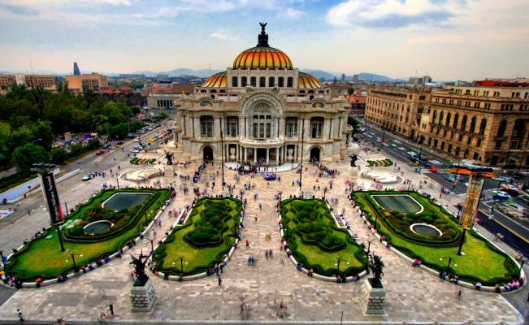

John
La ruta de John
A John le gusta la comida mexicana, la naturaleza, y las ciudades chicas. Su forma favorita de moverse es en bici y es apasionado a la fotografía.
John ha explorado una diversidad amplia de rutas usando Travel Route, como Río de Janeiro, San Francisco y actualmente la Ciudad de México.
En la Ciudad de México, John ha explorado una variedad de restaurantes y bares, tales como La Casa de Toño y el bar Departamento.

Lugares explorados:

La Ciudad de México